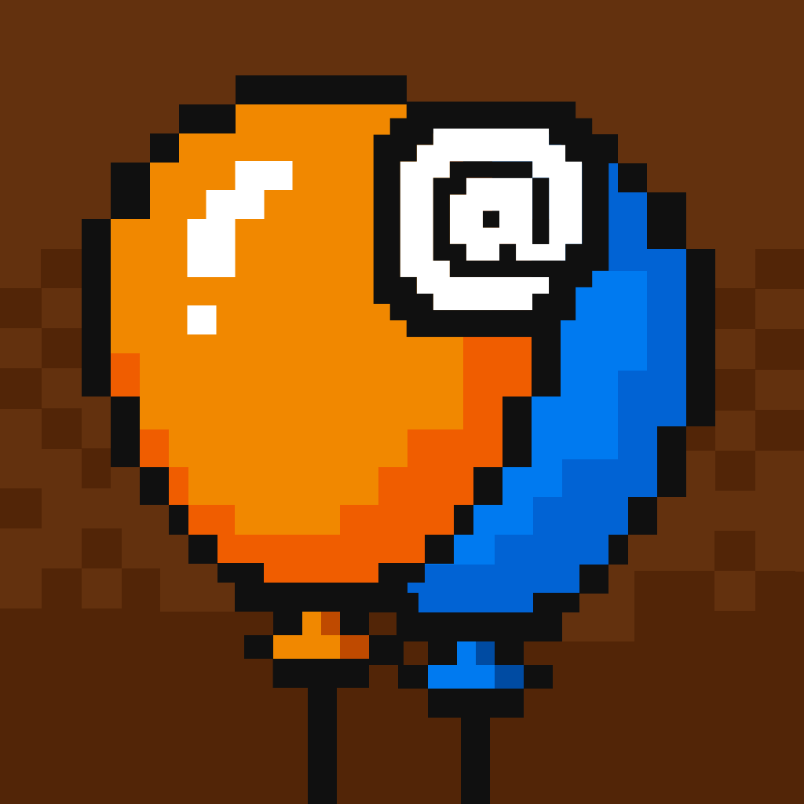
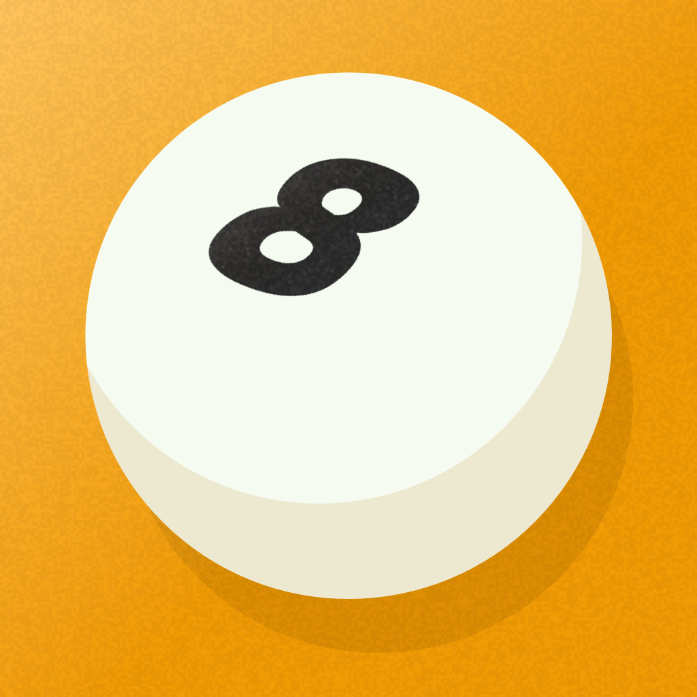
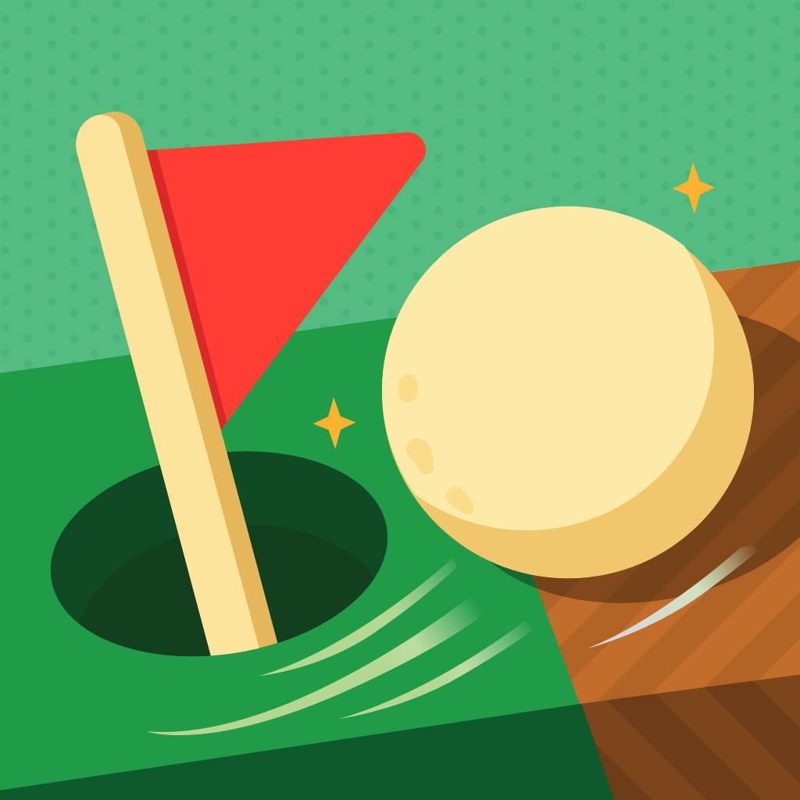
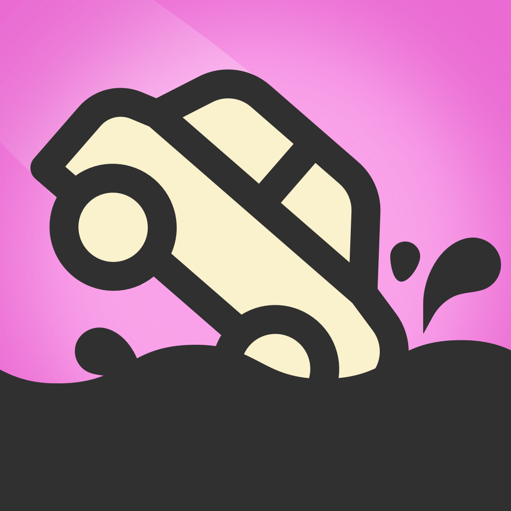

VIKAS PAWAR · DESIGNER & GAME CREATOR
Thoughtful design.
A little play.
I make digital experiences feel simple.
And simple ideas feel fun.
UX DESIGN / DIGITAL PRODUCTS / INDIE GAMESSCROLL TO EXPLORE ↓
01 / SELECTED WORKMade with purpose.
Made with purpose.
Built for play.
A few things I’ve brought into the world.
Small details. Lasting experiences.

ARCADE · 2026FEATURED BY APPLEIndie Games We LoveThat's My Balloon!
A little chaos. A lot of popping.

PUZZLE · 2023FEATURED BY APPLEGame of the DayLast Pocket
Roll to victory.

PUZZLE · 2026FEATURED BY APPLEGame of the DayGolf Piko
Think outside the fairway.

ARCADE · 2025FEATURED BY APPLEAmazing Games with LeaderboardsDrive, Not Dive
A balancing act on four wheels.
A CLOSER LOOK AT MY DESIGN PROCESS
JioTV UX case study
Explore the thinking behind the experience.
02 / THE PLAYGROUND
App Store ↗More little adventures.
Find your next five-minute escape.Explore on Google Play ↗
I’m Vikas, a UX designer and independent game creator with 15+ years of experience in technology.
My work spans healthcare, entertainment, and gaming. I’m interested in what makes an experience intuitive—and what makes someone want to come back.
Whether it’s a digital product or a pocket-sized game, I care about the same thing: making every interaction feel considered.
UX & UI designDigital productsGame development
something good. ↗